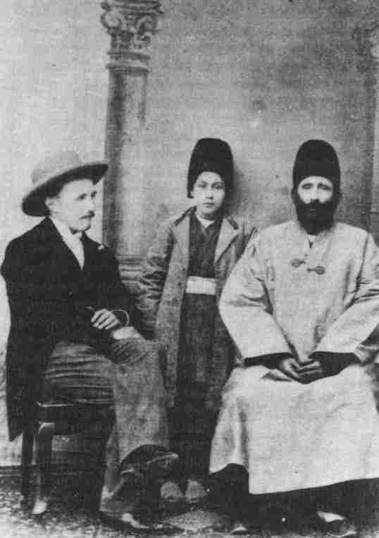

Tablets to the Hands of the CauseThe four Hands of the Cause were the recipients of a great many Tablets from Bahá'u'lláh. This is especially true in the case of the first three Hands, who were long-standing believers. For many years Bahá'u'lláh revealed Tablets in their names; through these He nurtured their souls and illumined their hearts and minds. Some of these Tablets are unusually lengthy and include sections addressed to many other individual believers. Long before they were designated as Hands of the Cause, Mullá 'Alí-Akbar, Ibn-i-Asdaq and Ibn-i-Abhar used to carry out the same functions in deepening the friends' knowledge of the Faith, encouraging and supporting them in their teaching work and guiding their steps in their manifold activities. In the course of these services they used to write to Bahá'u'lláh and beseech His blessings for certain souls who were serving the Cause assiduously, and Bahá'u'lláh would respond by revealing Tablets in which He usually addressed each individual separately. Sometimes He would reveal several pages in honour of one individual. In this way the Tablets addressed to the Hands and indeed to other outstanding teachers of the Faith would often contain so many pages as to assume the size of a small book. So numerous are the Tablets revealed by Bahá'u'lláh in honour of the four individuals designated as Hands of the Cause, that a compilation of them would probably amount to one or two large volumes. Added to these are a vast number of Tablets which were sent to them by 'Abdu'l-Bahá. All we can do here is skim the surface and glean a few gems from such a vast treasury.
|
||
|
In one of His Tablets to Ibn-i-Asdaq, Bahá'u'lláh reveals these celebrated Words on being informed that the friends in Tihrán had arranged to observe the commandment of the Mashriqu'l-Adhkár:*
Blessed is the spot, and the house, and the place, and the city, and the heart, and the mountain, and the refuge, and the cave, and the valley, and the land, and the sea, and the island, and the meadow where mention of God hath been made, and His praise glorified.1Bahá'u'lláh has portrayed a fascinating spectacle in the spiritual worlds of God where the holy souls and the Concourse on High are circling around any spot on this earth where the believers are engaged in praise and glorification of God. In one of His Tablets He reveals these thought-provoking words:
By My life and My Cause! Round about whatever dwelling the friends of God may enter, and from which their cry shall rise as they praise and glorify the Lord, shall circle the souls of true believers and all the favoured angels. And should the door of the true eye be opened unto some, they shall witness the Supreme Concourse as it circleth and crieth: 'Blessed art thou, O house, for God hath made thee a resting-place for those He favoureth, and a lodging for those He holdeth dear, and a home for those in whom He hath placed His trust. Unto thee be His praise and His glory and His endless grace'.2We may conclude, therefore, that one of the main reasons that Bahá'í gatherings are conducive to the spiritual upliftment and joy of the participants is the influence exerted by the company of God's chosen souls. In His Tablets to the Hands of the Cause, Bahá'u'lláh has revealed a great many exhortations addressed to the Bahá'ís in general. These reiterate the basic teachings of the Faith such as |
* Literally, the Dawning-Place of the mention of God, Bahá'í House of Worship. Bahá'u'lláh has ordained that the believers attend the Mashriqu'l-Adhkár before dawn for prayers. Although the friends did not have a House of Worship, they used to assemble at someone's house.
1. Unpublished compilation, National Archives Committee, no. 27, p. 354. Shoghi Effendi's English translation is well-known to Bahá'ís and appears on the title-page of Bahá'í Prayers (Wilmette, Illinois: Bahá'í publishing Trust, 1982). 2. Bahá'í Meetings, p. 21.
Audio: Blessed is the Spot (in Arabic). See Download Center. |
|
|
love and unity among the believers, steadfastness in the Cause, teaching the Faith, detachment from earthly things, and many more. Since we have already covered these subjects in these volumes we mention only a few highlights here. In a Tablet3 to Mullá 'Alí-Akbar Bahá'u'lláh states that His Pen had been continually engaged during these days in revealing the meaning of the promotion of the Cause. This He did lest some foolish ones might commit an unseemly act which could become the cause of the cessation of divine bounties. Bahá'u'lláh then directs Mullá 'Alí-Akbar to urge the believers to become detached from the things of this world, to cleanse themselves from all unworthy and futile deeds, and turn their hearts and souls towards God. Only in this way can they be successful in promoting His Cause. In another Tablet4 to the same Hand of the Cause Bahá'u'lláh enjoins on His followers to adhere to such deeds as will bring about the exaltation of His Cause, reminds them that in this Dispensation conflict and contention are by no means permitted, and urges them to promote His Cause by the sword of wisdom and utterance and not by the sword of steel. In a Tablet5 to Ibn-i-Asdaq, Bahá'u'lláh addresses the people of Bahá and exhorts them to appreciate the great bounty of living in this Day, to adorn themselves with such holy deeds that the peoples of the world may inhale from them the fragrance of the beauty of God and recognize His characteristics from their behaviour. Writing about detachment in another Tablet6 to the same Hand of the Cause, Bahá'u'lláh recalls the words of Christ when He said to His disciples that in the course of their missionary work they should shake off the very dust from their garments when they depart from a city. In another Tablet7 to Ibn-i-Asdaq, Bahá'u'lláh affirms that the effect of every pure deed carried out in this day will remain and be remembered for ever. In the same Tablet He mentions that everything is placed within the clutches of ultimate extinction except the Words that have been revealed by the Pen of the Most High. In a Tablet8 to Mullá 'Alí-Akbar Bahá'u'lláh mentions that if |
3. Unpublished compilation, National Archives Committee, no. 28, p. 157. 4. ibid. p. 190. 5. ibid. no. 27, p. 394. 6. ibid. p. 419. 7. ibid. pp. 379-80. 8. ibid. no. 28, p. 3. |
|
|
God's glances of favour were to be interrupted for one instant, every human being would become a heap of mouldering bones. To Ibn-i-Asdaq9 Bahá'u'lláh describes the greatness of His Revelation. He states that if anyone truly recognizes its grandeur, he will not be deflected from His Cause even if he were to be offered all the treasures of the world and all the good things that may be found therein. In the same Tablet He makes reference to three things in an interesting manner. He states that no one may be considered to be a human being unless he is adorned with the quality of justice and fairness; that there can be no real power except through unity; and that there can be no well-being and happiness except through consultation. Referring to the perversity of people, and especially religious leaders, Bahá'u'lláh in a Tablet10 to Mullá 'Alí-Akbar asserts that these unfortunate beings are unaware of the truth of the Cause of God. If only they could attain His presence during the time of revelation when the verses of God are being sent down, each one of them would be so carried away as to become humble and prostrate himself at the feet of his Lord. In another Tablet11 to Ibn-i-Asdaq, Bahá'u'lláh describes this perversity of the people, especially the Islámic clergy. He ascribes the cause of their deprivation and ignorance of the Faith of God to punishment for the deeds they had committed. He further invokes the wrath of God for those who rise up against His Cause and are determined to put out its light. He asserts the futility of their efforts and declares that in reality their inner beings deride their own selves for their foolish deeds. In a Tablet12 to Mullá 'Alí-Akbar Bahá'u'lláh proclaims that every created thing bears witness to His steadfastness, His bounties and His mercy. Those who have heard His call and attained to His Faith are the people of Bahá and the companions of the Crimson Ark.* He announces that this is not the day for people to ask questions, to raise their voices, to deliver their own speeches or to make mention of themselves. It behoves them in this day to turn their ears to the most exalted Horizon and |
* see God Passes By, p. 151.
9. Unpublished compilation, National Archives Committee, no. 27, p. 297. 10. ibid. no. 28, pp. 7-8. 11. ibid. no. 27, p. 226. 12. ibid. no. 15, p. 395. |
|
|
hearken to His voice. He informs them that whatever they possess will not benefit them, urges them to discard the material world and take the book of God in their hands in a spirit of resignation and submissiveness. These words of Bahá'u'lláh are very similar to His celebrated counsels in the Hidden Words:
O Son of Dust! Blind thine eyes, that thou mayest behold My beauty; stop thine ears, that thou mayest hearken unto the sweet melody of My voice; empty thyself of all learning, that thou mayest partake of My knowledge; and sanctify thyself from riches, that thou mayest obtain a lasting share from the ocean of My eternal wealth. Blind thine eyes, that is, to all save My beauty; stop thine ears to all save My word; empty thyself of all learning save the knowledge of Me; that with a clear vision, a pure heart and an attentive ear thou mayest enter the court of My holiness.13In these utterances Bahá'u'lláh is speaking as the Manifestation of God, upon whose Revelation the human world depends for its growth and development in the same way that life on this earth depends upon the sun. In one of His Tablets14 to Mullá 'Alí-Akbar, Bahá'u'lláh affirms that should a person fully surrender himself to God and reach a stage of utter self-effacement in His path, such a soul will never become concerned with rank and position, or reputation and honour. In His Tablets to the Hands of the Cause there are innumerable references to teaching the Faith. In one of these15 He states that there are many souls who have never entered a school, but who through the love of God have attained such an exalted position that the living waters of wisdom flow from their hearts and tongues. We have already referred to this subject in greater detail in previous volumes, and described the teaching achievements of some individuals who possessed the gift of true understanding and spiritual knowledge even though devoid of any learning and education. In His Writings Bahá'u'lláh often speaks of wisdom in teaching. In a Tablet16 to Mullá 'Alí-Akbar He explains that some individuals may accept the Faith on hearing a certain |
13. Hidden Words, Persian no. 11. 14. Unpublished compilation, National Archives Committee, no. 28, p. 190. 15. ibid. no. 27, p. 230. 16. ibid. no. 28, p. 191. |
|
|
statement. They are also prone to reject it on hearing another. He urges the teachers of the Cause, therefore, when teaching a soul, to bring up those words through which the fire of the love of God may be enkindled in the heart. Should the seeker's heart become ignited with this fire, he will gradually learn about the Faith and become steadfast in it. Innumerable passages in Bahá'u'lláh's Tablets to the Hands of the Cause contain similar exhortations and counsels, all revealing the high ideals and principles which constitute the foundation of the Cause of God. Numerous passages in these Tablets also reveal the glory of the Revelation of Bahá'u'lláh, laud its greatness, and unveil in unmistakable terms the awe-inspiring station of its Author. Another feature of these Tablets is the outpouring of loving-kindness, admiration, encouragement, prayer, and praise upon the Hands of the Cause, expressed with such tenderness and warmth as no pen but His own can describe. Also, Bahá'u'lláh had issued many and varying instructions to His chosen instruments, all aimed at fostering the infant Faith of God, protecting its precious foundations, furthering its interests, promoting its teachings and strengthening the faith of its adherents. The Commandment to Act with Wisdom In Most of His Tablets to the Hands of the Cause, Bahá'u'lláh speaks of wisdom. For instance, in a Tablet17 to Ibn-i-Asdaq He states that even teaching the Cause, the most important of all deeds, is dependent upon the exercise of wisdom. First comes the observance of wisdom, then the utterance of words. By wisdom is meant taking any praiseworthy action through which the Cause of God may be promoted. Lack of wisdom is to take actions which owing to circumstances result in harming the Faith, even though they may be carried out with the best possible motive. The commandment of Bahá'u'lláh to act with wisdom is valid for all time. Indeed, as the Cause of God continues to grow the forces of opposition will array themselves against it in proportion to its growth. In this battle against the forces of darkness, wisdom |
17. Unpublished compilation, National Archives Committee, no. 27, p. 264. |
|
|
applied by the individual believer as well as by the institutions of the Faith plays a major part in the protection and promotion of the Cause of God. Bahá'u'lláh has urged the Hands of the Cause to be vigilant and help the friends to avoid taking any action which might adversely affect the interests of the Faith. We cite two examples. In a previous volume* we have described how some time after the Kitáb-i-Aqdas was revealed Bahá'u'lláh allowed Jamál-i-Burújirdí† to copy certain parts of it and take them with him to Persia. At some point Jamál advocated the establishment of the local Houses of Justice enjoined in the Kitáb-i-Aqdas. The Hand of the Cause Mullá 'Alí-Akbar sought guidance from Bahá'u'lláh on this issue. In a Tablet18 to him Bahá'u'lláh responded by stating that the application of any of His laws was conditional upon the exercise of wisdom. He explained that the establishment of this institution was not timely, because should the enemies of the Cause discover it, they would create a commotion, the elected members would become targets and their lives would be in great danger. He envisaged that these institutions would be formed at a later time when conditions became more favourable. Furthermore, He affirmed that because of the immaturity and perversity of the public, and for the protection of the believers, He had not required them to implement most of the laws of the Kitáb-i-Aqdas. The main reason for the dispatch of a copy to Persia was that a record of the laws might be kept in the hands of the friends. Another example in the exercise of prudence and wisdom may be found in a Tablet19 to the same Mullá 'Alí-Akbar. This concerns the printing of Bahá'u'lláh's Writings, for which he had asked permission. While stating that this matter ought to be resolved through consultation, Bahá'u'lláh advised caution and prudence. He explained that it was not wise at that time to print books, because should a large number of books become available, the enemies of the Cause (who were waiting for an excuse) could |
* see vol. 3, p. 280. † see vol. 2 and above, pp. 145, 188, 254.
18. Unpublished compilation, National Archives Committee, no. no. 28, p. 179. 19. ibid. no. 15, pp. 423-4. |
|
|
be provoked into bringing about an upheaval in that land. Bahá'u'lláh intimates that it was for the same reason that He had stopped the dissemination of the Kitáb-i-Íqán which had been printed some twenty years before. Bahá'u'lláh and 'Abdu'l-Bahá have counselled the believers to exercise wisdom in the promotion of the Cause, but wisdom must not be interpreted as fear and lack of enthusiasm for the Faith. Mullá 'Alí-Akbar was once advised by his fellow Hands of the Cause to conceal himself from the enemies during the month of Muharram when the emotions of the mob are deeply stirred by the clergy. This is a month of mourning for Shí'ah Islám, commemorating the martyrdom of Imám Husayn, and people usually become very wild. Mullá 'Alí-Akbar, who was always an easy target for attack, is reported to have smiled and said these words in reply:
It is true that in the Holy Tablets we are commanded to observe wisdom. By wisdom is not meant to be fearful or to have no reliance upon God. It means to act with thoroughness, and to conduct oneself with truthfulness, benevolence and patience; it means to sow the seeds of the teachings of God in the pure and goodly soil of the hearts. It does not mean fear or hiding. |
||
away from God's decree? On the contrary one has to speed up towards Him.20Hájí Mírzá Haydar-'Alí, the chronicler of this story, concludes by saying, 'Mullá 'Alí-Akbar spoke so convincingly that those present felt ashamed, and recognized that their advice to him indicated a lack of understanding of reliance upon God on their part.' How Tablets were Delivered to their Recipients Bahá'u'lláh's Tablets were usually revealed in honour of known individual Bahá'ís, whose names were inscribed in them. However, sometimes the name of the intended recipient was not given, or sometimes it would be given in abbreviated form. In such a case the individual might receive the Tablet intended for him in an unusual way. For example, in a previous volume* we noted that Bahá'u'lláh revealed a Tablet without a name but intended for Hájí Muhammad-Táhir-i-Málmírí when he was only a child, and he received this Tablet in a mysterious way almost twenty years later. Sometimes Bahá'u'lláh used to send a few Tablets without names to a well-known Bahá'í, asking him to give each to any one of the believers he felt moved to give them to. Those who received a Tablet in this way discovered that Bahá'u'lláh had indeed intended it for them. Bahá'u'lláh, in a Tablet21 revealed in honour of the Hand of the Cause Ibn-i-Asdaq and written in the words of His amanuensis, issued certain instructions as how to deliver nine Tablets without names to nine individuals whose names were supplied in a separate list without indicating which Tablet belonged to whom. The reason for not inscribing the names of the recipients on the Tablets, was to protect the believers from the enemies, who were anxious to know the identity of the members of the Bahá'í community. The instructions of Bahá'u'lláh, as conveyed by His amanuensis, were for Ibn-i-Asdaq first to carry out certain devotions, then to position the Tablets in a high place, and while turning his heart |
* vol. 1, pp. 38-40.
20. Quoted by Hájí Mírzá Haydar-'Alí, Bihjatu's-Sudúr, pp. 426-7. 21. Unpublished compilation, National Archives Committee, no. 27, p. 314. |
|
|
to Bahá'u'lláh to reach for one, write on it whichever of the nine names came to mind, and deliver it to him. It is also indicated by Bahá'u'lláh's amanuensis that more Tablets would be sent to Ibn-i-Asdaq for distribution in the same fashion. As it was the will of Bahá'u'lláh for each individual to receive the very Tablet which was intended for him, this method of spiritual communication, which He Himself had authorized, became truly effective. Each recipient clearly saw that the contents of his Tablet fit precisely his own personal circumstances and answered his questions. This is not surprising to the followers of Bahá'u'lláh, for they believe that every major development that takes place in this Dispensation is guided by His Will. Nothing is impossible of achievement if the Will of God becomes the motivating influence. It is the Will of God which enables nature to create life and to bring about an abundance of miracles--the miracle of a tiny seed turning into a mighty tree, producing branches, leaves, blossoms and fruits; the miracle of a single cell in the womb of a mother, multiplying in an orderly fashion, becoming at the end a perfect human being; the miracles of the atom, of the universe and of every other created thing. All these happen through the Will of God. The miracle of religions is no less remarkable. A religion comes into being as a seemingly insignificant movement at first, but through the power of God and His Will it flourishes and creates a civilization of its own. It is the miracle of the ascendancy of the Will of God which enables the Founders of all religions to triumph over their adversaries, and causes Their word to become creative. In an address to His disciples the Báb, referring to the power of God, said:
...fix your gaze upon the invincible power of the Lord, your God, the Almighty. Has He not, in past days, caused Abraham, in spite of His seeming helplessness, to triumph over the forces of Nimrod? Has He not enabled Moses, whose staff was His only companion, to vanquish Pharaoh and his hosts? Has He not established the ascendancy of Jesus, poor |
||
and lowly as He was in the eyes of men, over the combined forces of the Jewish people? Has He not subjected the barbarous and militant tribes of Arabia to the holy and transforming discipline of Muhammad, His Prophet? Arise in His name, put your trust wholly in Him, and be assured of ultimate victory.22Today Bahá'u'lláh has promised that He will infallibly guide the Universal House of Justice. It is nothing but the realization of the Will of God which makes it possible for the members of the House of Justice to be guided by Him in their decisions. The distribution of Tablets without names to their intended recipients mentioned above is another example of the guidance of God which He bestows, at times, upon whomsoever He wills. It is interesting to note that Ibn-i-Asdaq was not the only person who delivered Bahá'u'lláh's Tablets in this fashion; others too were occasionally asked to distribute unaddressed Tablets to certain believers. For example, soon after His arrival in 'Akká Bahá'u'lláh sent a number of Tablets to Rada'r-Rúh and asked him to hand each one to whichever believer should come to his mind. Shaykh Salmán is another example: we have given an account of this in a previous volume.* All this is not more amazing or incredible than the miracle of a babe, Moses, placed in a casket and delivered to the waters of the Nile for its protection! On some occasions 'Abdu'l-Bahá also sent unaddressed Tablets to some individuals and gave special instructions as to the manner of choosing the recipients. The following account by Hájí Mírzá Haydar-'Alí is very illuminating indeed:
I went to Ábádih.† Each one of the believers in Ábádih and the neighbouring villages, may my life be sacrificed for them all, is like a mountain in his steadfastness and as a shining lamp in his love and servitude. I attained their presence in their gatherings. These meetings became the sources of illumination, the dawning-places of the mention of God where the angels |
* see vol. 1, p. 113. † A small town in the province of Fárs, well-known as the burial place of the heads of the martyrs of Nayríz. See The Dawn-Breakers, pp. 644-5.
22. Quoted by Nabíl-i-A'zam, The Dawn-Breakers, p. 94. |
|
descended and the faithful assembled numbering one hundred or more. We met every day in the morning, at noon and in the evening. The sweet savours of devotion, self-sacrifice and detachment from all worldly things were wafted in those gatherings.The Englishman mentioned by Hájí Mírzá Haydar-'Alí is William J. Patchin, a young official who had been befriended by the believers of Ábádih who taught him the Faith. Notable among those who helped him to recognize the truth of the Cause of God was a devoted and influential believer, Mírzá Atá'u'lláh |
23. Bihjatu's-Sudúr, pp. 316-17. |
An English believer in Ábádih, with Saráju'l-Hukamá (right) and his young son |
|
entitled Saráju'l-Hukamá. He was the first believer in Ábádih and one who served the Faith with distinction. He succeeded in erecting a suitable building on the burial site of the heads of the martyrs of Nayríz, which was designated by 'Abdu'l-Bahá as Hadiqatu'r-Rahmán (Garden of the Merciful). As to William Patchin, a brief account was written in memory of him by Dr Susan Moody, one of the earliest American pioneers to Persia:
Mr William J. Patchin aged 28 years, a native of London, England, died at Tihrán, Persia, Dec. 31, 1910. He lived the Bahá'í life and was constantly serving the Cause. He had resigned his position with Indo-European Telegraph Co. that he might go to Egypt to see 'Abdu'l-Bahá, when he was suddenly summoned to the Supreme.24 |
24. Bahá'í News (later Star of the West), 1910, vol. I, no. 18. The author is grateful to Mr. Rahbar Agah for supplying the photograph of Saráju'l-Hukamá and William Patchin on page 327. |